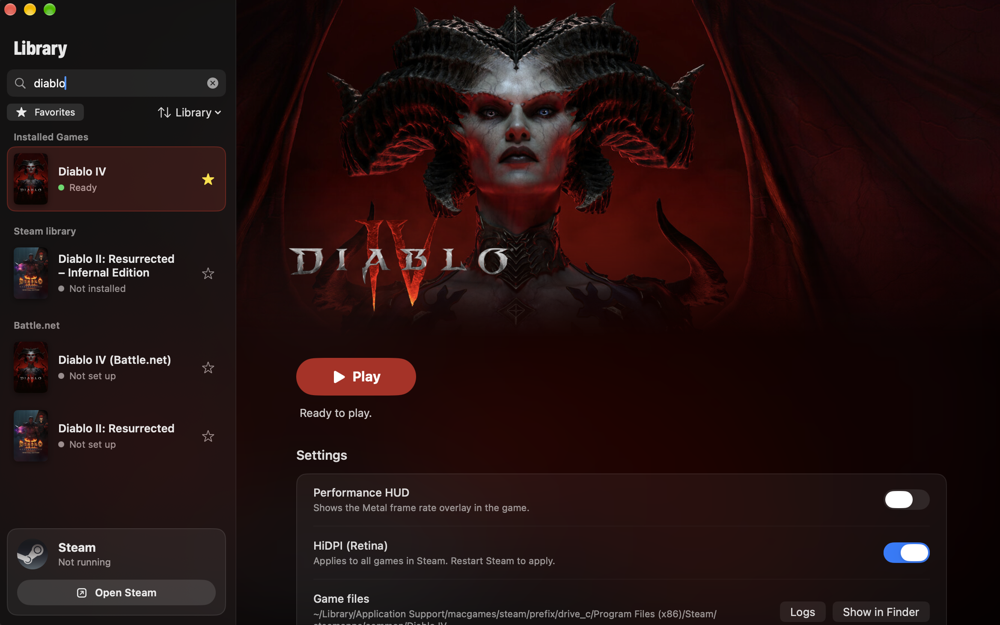
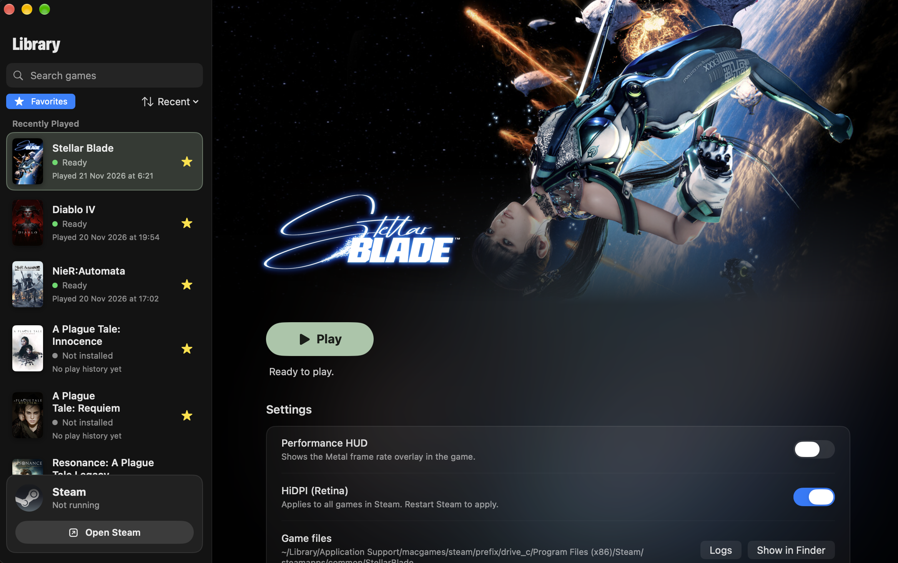

Independent fork · Maintained by fjasensi
Windows games.
One Mac library.
Your Steam and Battle.net games on Apple Silicon, with a launcher that keeps your next game easy to find.
Apple Silicon · macOS 26+ · Free for non-commercial use

Less scrolling. More playing.
Keep your next game close.


- Find it by name
- Press ⌘ F to search your library. Installed games appear first in the default view.
- Save your favorites
- Star a game and use the Favorites filter to keep your own shortlist.
- Return to a recent game
- Sort by recently played to bring your last sessions back to the top.
- Use the Steam you already have
- The fork reuses your MacGames Steam environment and installed games. Run one launcher at a time.
Growing at its own pace
More games in the library.
Recent additions include NieR:Automata, A Plague Tale: Innocence, A Plague Tale: Requiem, Resonance: A Plague Tale Legacy and Stellar Blade.
NieR:Automata and Stellar Blade have been tested in gameplay by fjasensi. The A Plague Tale profiles still need gameplay testing.
Make it yours
Start with the fork.
Build locally with Xcode 27, XcodeGen and CMake. You’ll also need an Apple Silicon Mac with macOS 26 or later and Rosetta 2.
Local builds are ad-hoc signed. Updates are manual, and your Steam library stays in its existing folder.
Packaged builds, when available, are listed in the fork’s releases.
git clone https://github.com/fjasensi/macgames.git
cd macgames
scripts/fetch-runtime.sh
scripts/build-fork.shThen copy build/fork/MacGames Fork.app to Applications. See the build instructions for prerequisites.
An independent fork, with credit to its roots.
Maintained by fjasensi, derived from MacGames by Tarik Caramanico and its contributors. This fork manages its own app code, releases and support. It still uses pinned upstream runtimes and game packs.
Found a bug or tested a game? Open an issue or read the contribution guide.